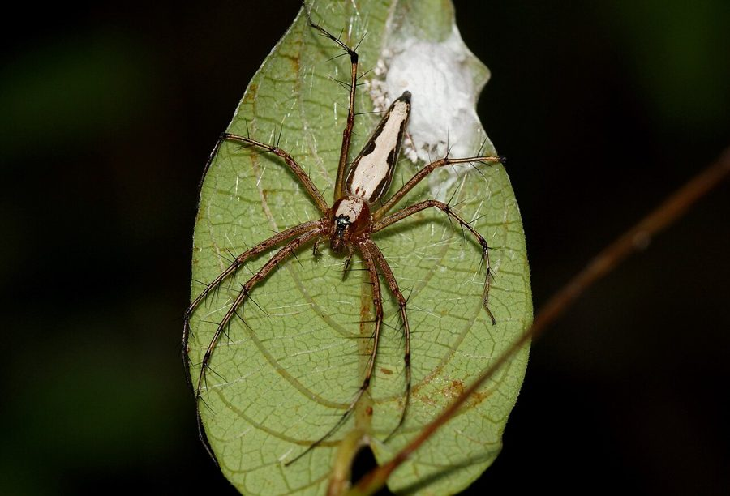

श्वेता लिंक्स मकड़ीShweta Lynx Spider
Oxyopes shweta · Oxyopidae · SPD-0043

- Scientific name वैज्ञानिक नाम
- Oxyopes shweta Tikader, 1970
- Family कुल
- Oxyopidae
- Hindi हिंदी
- श्वेता लिंक्स मकड़ी
- Local names स्थानीय नाम
- shweta lynx spider, oxyopes shweta, safed links makdi
- Status here यहाँ की स्थिति
- native
- Movement आवागमन
- Resident, here all year
- Known from कहाँ दर्ज
- Others have published records from the wider Awadh–Purvanchal plain, none yet from Basti–Ayodhya अवध–पूर्वांचल से दूसरों के प्रकाशित अभिलेख, बस्ती–अयोध्या से अभी नहीं
- IUCN IUCN
- not evaluated
- Review समीक्षा
- not yet reviewed
When to look कब देखें
Present all year. साल भर मौजूद।
Tell it apart from इनसे अलग पहचानें
श्वेता लिंक्स मकड़ी / Shweta Lynx Spider
Oxyopes shweta Tikader, 1970 — Oxyopidae
श्वेता लिंक्स मकड़ी — उत्तर प्रदेश के खेतों, बगीचों और झाड़ियों में पाई जाने वाली एक सक्रिय शिकारी मकड़ी, जिसका शरीर सफेद-हरा होता है, टांगों पर लंबे काले कांटे होते हैं और यह बिना जाला बनाए पत्तियों पर शिकार करती है।
Quick Identification त्वरित पहचान
| Feature | Description |
|---|---|
| Coloration | Pale chalky-white to translucent yellowish-white with brown longitudinal stripes |
| Eye pattern | Eight eyes arranged in a distinctive compact hexagonal ring on cephalothorax |
| Leg armature | Long slender pale legs armed with conspicuous, erect, needle-like black spines |
| Abdomen | Elongated, tapering posteriorly, adorned with chalky chevrons and lateral lines |
| Hunting style | Active diurnal cursorial hunter pouncing directly on prey without spinning a web |
Slender, active foliage spider distinguished by its pale chalky-white or pale greenish-white coloration with two dark longitudinal stripes on the carapace. The eyes form a characteristic hexagonal arrangement on the high cephalic region. The long, slender legs bear prominent, erect black spines. It does not construct a capture web, instead stalking insects over foliage with quick darting sprints and agile jumps.
हिंदी: पतली सफेद-हरी शिकारी मकड़ी जिसकी टांगों पर नुकीले काले कांटे होते हैं और सिर पर आंखें षट्कोण (हेक्सागोन) के आकार में सजी होती हैं। यह बिना जाला बनाए पौधों पर दौड़कर शिकार करती है।
Morphology शारीरिक संरचना
| Feature | Description | Source |
|---|---|---|
| Carapace shape | Longer than wide, high and narrow in cephalic region, sloping posteriorly | Tikader (1970) |
The female cephalothorax is pale chalky-white or yellowish-white, longer than wide, with a high cephalic area that slopes steeply down towards the thoracic margins. Two dark brown longitudinal bands run parallel from the posterior eyes across the carapace. The eyes are ringed with black, arranged in four rows (2-2-2-2) forming a conspicuous hexagon characteristic of the Oxyopidae. The abdomen is elongated and cylindrical anteriorly, tapering sharply towards the spinnerets, marked with a chalky-white cardiac streak and pale chevrons. The legs are pale yellowish, long and slender, armed with prominent erect black spines. The male is slightly smaller and more slender, with noticeably enlarged, dark sclerotized palpal bulbs.
हिंदी: सिर पर दो भूरी धारियां होती हैं और आंखें चार पंक्तियों में षट्कोणीय क्रम में सजी होती हैं। टांगों पर तीखे काले कांटे होते हैं।
Behaviour & Ecology व्यवहार एवं पारिस्थितिकी
A strictly diurnal, free-ranging cursorial hunter that lives on the leaves and stems of herbaceous plants and shrubs. Rather than relying on silk snares, it utilizes excellent vision to detect prey from distances of several centimetres. When an insect alights nearby, the spider creeps forward stealthily before launching a lightning-fast leap to grapple the prey with its spiny legs and deliver a paralyzing bite. When disturbed, it darts instantly to the underside of a leaf or drops on a fine silk safety dragline into lower foliage.
हिंदी: यह दिन में सक्रिय रहने वाली मकड़ी है जो जाला नहीं बुनती। यह अपनी तेज दृष्टि से पत्तियों पर बैठे कीड़ों को देखती है और बिल्ली की तरह दबे पांव चलकर उन पर छलांग लगाती है।
Life Cycle / Phenology जीवन चक्र एवं फेनोलॉजी
Adults are present throughout the year, with highest densities recorded during the post-monsoon and autumn months (Sebastian & Peter 2009). Following courtship, during which the male signals with rhythmic leg twitches and palpal displays, the female constructs a flat, circular egg sac composed of tough papery white silk. The egg sac contains 30 to 60 eggs. The female attaches the egg sac to the underside of a broad leaf and guards it tenaciously against parasitic wasps and predatory bugs until the spiderlings hatch and disperse by ballooning.
हिंदी: यह पूरे वर्ष सक्रिय रहती है। मादा पत्ती के नीचे रेशम की गोल थैली बनाकर उसमें 30 से 60 अंडे देती है। मादा अंडों की रक्षा करती है और बच्चे निकलने पर हवा में रेशमी धागे से उड़कर बिखर जाते हैं।
Host Plants or Prey आहार एवं शिकार
Strictly insectivorous and an opportunistic generalist predator. It feeds on small, soft-bodied agricultural insects that infest crop foliage and flowering herbs. Regular prey items include aphids, leafhoppers, planthoppers, thrips, small lepidopteran caterpillars, whiteflies, fruit flies, and small dipterans. It readily attacks prey items larger than its own cephalothorax, pinning them down with its stiff tibial and metatarsal spines.
हिंदी: इसका आहार फसलों पर लगने वाले हानिकारक कीड़े हैं, जिनमें माहू (एफिड्स), फुदके, थ्रिप्स, छोटी इल्लियां और मक्खियां शामिल हैं। यह अपने कांटों वाले पैरों से शिकार को दबाकर तुरंत जहर का डंक मारती है।
Predators / Natural Enemies प्राकृतिक शत्रु एवं शिकारी
Major predators include pompilid spider-hunting wasps, sphecid mud-dauber wasps, mantises, and insectivorous birds such as the Asian Pied Starling (Gracupica contra) and Plain Prinia (Prinia inornata). Jumping spiders (Salticidae) and larger web-building spiders also prey upon lynx spiders when opportunities arise. The spider's pale cryptic coloration provides effective camouflage against faded leaves and pale flower buds.
हिंदी: ततैया (स्पाइडर वास्प) इस मकड़ी का मुख्य शिकारी है जो इसे मारकर अपने घोंसले में भरती है। इसके अलावा शिकारी पक्षी जैसे प्रिनिया और अन्य बड़ी मकड़ियां भी इसे खा जाती हैं।
Agricultural / Human Relevance कृषि एवं मानव उपयोगिता
An exceptionally beneficial predatory arthropod in agricultural fields, market gardens, and agroforestry plots. In cropping systems such as cotton, arhar (pigeonpea), and mustard across northern India, it consumes substantial numbers of economically destructive sap-sucking pests, especially jassids and caterpillars. It does not damage plants or spin nuisance webs, and its venom is entirely harmless to humans and domestic animals.
हिंदी: यह फसलों के लिए अत्यंत लाभकारी मित्र कीट है जो कपास, अरहर और सरसों में रस चूसने वाले हानिकारक कीटों का भक्षण करती है। यह इंसानों के लिए पूरी तरह हानिरहित और विषहीन है।
Expected Locally क्षेत्रीय संभावना
Not a field record. Written from published accounts for eastern Uttar Pradesh. No confirmed local sighting yet — if you have seen it, that is what the atlas needs.
अभी तक स्थानीय पुष्टि नहीं। यह विवरण प्रकाशित स्रोतों से है, किसी अवलोकन से नहीं।
GBIF holds published records across the agricultural plains of northern India and eastern Uttar Pradesh. It is expected on crop foliage in pulse fields, kitchen gardens, and canal-bank shrubbery across the Ghaghara and Kuwana drainage basins. A confirmed local record requires a clear macro-photograph displaying the distinctive pale body stripes, leg spines, and hexagonal eye arrangement along with date and locality details.
हिंदी: यह पूर्वी उत्तर प्रदेश के खेतों और बगीचों में पौधों की पत्तियों पर संभावित है। स्थानीय पुष्टि के लिए टांगों के कांटे और सिर की आंखें दर्शाने वाली स्पष्ट मैक्रो तस्वीर आवश्यक है।
Distribution वितरण
Widely distributed across India, Pakistan, Bangladesh, and Sri Lanka. Within northern India, it occurs commonly throughout the alluvial agricultural floodplains of the Indus and Ganges river systems, extending into foothill valleys and peninsula tablelands.
हिंदी: यह पूरे भारतीय उपमहाद्वीप में व्यापक रूप से पाई जाती है। उत्तर भारत के मैदानी भागों में यह फसलों और प्राकृतिक झाड़ियों पर सामान्य रूप से मिलती है।
Research Questions शोध प्रश्न
- What is the daily predation rate of Oxyopes shweta on Amrasca biguttula (cotton jassid) under ambient field conditions?
- How does chemical pesticide application in pulse crops impact local populations compared to organic field borders?
- Which common weeds flanking agricultural ditches serve as the primary overwintering refuge for subadults?
- What are the primary parasitoid wasp species that attack egg sacs in northern Indian agroecosystems?
- क्या अरहर और सरसों के खेतों में रासायनिक दवाओं के छिड़काव से इस मकड़ी की संख्या तेजी से घटती है?
- क्या खेतों की मेड़ों पर देशी खरपतवार छोड़ने से इसके प्राकृतिक संरक्षण में सहायता मिलती है?
Similar Species समान प्रजातियाँ
| Similar species | Distinction | Hindi distinction | |
|---|---|---|---|
| Striped Lynx Spider \ | Oxyopes salticus | Yellowish-brown body with bold dark brown lateral and abdominal stripes; lack chalky-white base color | स्ट्राइप्ड लिंक्स मकड़ी अधिक भूरी होती है और इसके शरीर पर गहरी चौड़ी धारियां होती हैं |
| Green Lynx Spider \ | Peucetia viridana | Much larger size; bright emerald-green body; legs dotted with numerous black spots around spine bases | हरी लिंक्स मकड़ी आकार में काफी बड़ी और गहरे पन्ना हरे रंग की होती है |
| Hieroglyphic Lynx Spider \ | Hamadruas hieroglyphica | Brownish-rufous body with complex dark hieroglyphic-like abdominal markings; larger cephalothorax | हीरोग्लिफिक लिंक्स मकड़ी कत्थई-भूरी होती है और उस पर जटिल आकृतियां बनी होती हैं |
Field rule: Slender pale chalky-white lynx spider with hexagonal eye arrangement, two dark carapace stripes, and long black-spined legs.
हिंदी: सफेद-हरे रंग की पतली मकड़ी जिसके सिर पर षट्कोणीय आंखें, दो भूरी पट्टियां और टांगों पर नुकीले काले कांटे हों।
Taxonomy & Classification वर्गिकी एवं वर्गीकरण
Original description. Tikader (1970), Spider fauna of Sikkim, Records of the Zoological Survey of India, 64, p. 78; type locality: Sikkim, India.
Subspecies. Monotypic species throughout its geographic range in South Asia.
Family and order placement. Placed in the lynx spider family Oxyopidae, order Araneae, class Arachnida.
IUCN status rationale. Not evaluated by the IUCN Red List; an abundant and ecologically widespread cursorial spider across agricultural landscapes.
हिंदी: बी. के. टिकैदर ने 1970 में इसका पहला वैज्ञानिक विवरण दिया था। यह ऑक्सीओपिडे कुल की सदस्य है और पूरे दक्षिण एशिया में पाई जाती है।
Photo Gallery फोटो गैलरी
No photos yet — add field photos to media/species/shweta_lynx_spider/ and run node scripts/sync_photos.js.
Photos needed आवश्यक फोटो
- [ ] Female perched on green crop leaf showing chalky-white coloration and dark carapace stripes (पत्ती पर बैठी मादा के सफेद शरीर और भूरी धारियों का दृश्य)
- [ ] Close-up of carapace highlighting hexagonal arrangement of eight eyes (आठ आंखों के षट्कोणीय क्रम को दर्शाता सिर का क्लोज-अप)
- [ ] Detail of legs displaying long, erect, needle-like black spines (टांगों पर सीधे खड़े काले कांटों का स्पष्ट दृश्य)
- [ ] Female guarding papery circular egg sac under a leaf (पत्ती के नीचे अंडों की थैली की रखवाली करती मादा मकड़ी)
- [ ] Typical agricultural field foliage habitat in pulse or vegetable crops (दलहनी या सब्जी के खेतों का प्राकृतिक वास)
- [ ] Macro detail of male pedipalp structure in lateral view (पार्श्व दृश्य में नर के पेडीपल्प की सूक्ष्म संरचना)
- [ ] Subadult individual stalking prey on crop foliage (फसल की पत्ती पर शिकार का पीछा करती किशोर मकड़ी)
- [ ] Close-up of spiny metatarsus holding prey (शिकार को जकड़े हुए कांटों वाले पैर का दृश्य)
References संदर्भ
- Original description: Tikader, 1970 — see GBIF.
- Sebastian, P. A. & Peter, K. V. (2009). Spiders of India. Universities Press, Hyderabad.
- GBIF Occurrence Data — Oxyopes shweta, India (2025).
Source file: species/fauna/spiders/shweta_lynx_spider.md